| Asset Class | Original Paper Proxy (Asness et al., 2012) | Our Replication Proxy (ETF) | Historical Proxy (Backfill < 2002) | Source |
|---|---|---|---|---|
| Global Equities | MSCI World / CRSP Value-Weighted | SPY (SPDR S&P 500) | S&P 500 Total Return Index | Yahoo Finance |
| Global Bonds | CRSP U.S. Treasury Database (10Y) | IEF (iShares 7–10Y Treasury) | Synthetic 10Y Par Bond Model | FRED / Model |
| Credit | Barclays Capital U.S. Corporate Index | LQD (iShares Investment Grade Corp) | ICE BofA US Corporate Master TR | FRED |
| Commodities | S&P GSCI (Futures) | GSG (iShares S&P GSCI) | S&P GSCI Total Return Index | Investing.com |
| Risk-Free Rate | 1-Month T-Bill / Repo / LIBOR | N/A (Used for calculation) | 3-Month T-Bill Rate (TB3MS) | FRED |
Leverage Aversion Revisited: Mitigating Correlation Risk in Risk Parity Portfolios via Trend Filtering
Abstract
This study investigates the validity and implementation challenges of Risk Parity strategies, grounded in the leverage aversion theory proposed by Asness, Frazzini, and Pedersen (2012). We first replicate a Naive Risk Parity baseline, confirming that a leverage-constrained environment theoretically favors safer assets, yet we find that standard covariance-based optimization (Equal Risk Contribution) paradoxically underperforms during high-correlation regimes like the 2022 inflation shock. To address this model risk, we propose and rigorously test a “Cash-Reserve Trend Risk Parity” framework that integrates a moving-average filter to actively deleverage during systemic drawdowns. Our results demonstrate that while the sophisticated ERC model suffers from overfitting and “diversification penalties” in correlated markets, the trend-augmented approach significantly reduces maximum drawdown and improves risk-adjusted returns by avoiding the “bond trap.” Furthermore, we conduct a comprehensive “real-world” friction analysis, accounting for transaction costs, ETF fees, and differential tax treatment between long-term holdings and high-turnover trend signals. We conclude that while trend-following introduces higher turnover and tax drag, its ability to mitigate tail risk makes it a superior, robust implementation for practical institutional mandates compared to static risk parity models.
Keywords
trading strategies, quantitative analysis, risk parity
Introduction
Risk parity (RP) portfolios have become a prominent alternative to traditional stock-heavy allocations such as 60/40. While RP often looks like a simple heuristic—“allocate more to safer assets and less to risky assets”—Leverage Aversion and Risk Parity (Asness, Frazzini, and Pedersen, 2012) provides a unifying theoretical explanation: when many investors are unwilling or unable to apply leverage, they tend to “reach for risk” by buying higher-beta assets to achieve higher expected returns. This demand pressure flattens the Security Market Line (SML), implying that low-risk assets can offer unusually strong risk-adjusted returns, whereas high-risk assets can be overpriced and deliver weaker risk-adjusted performance. In that world, a portfolio that overweights low-risk assets and scales its overall risk level via leverage is not merely an empirical curiosity—it is a natural outcome of equilibrium pricing under leverage frictions.
This project replicates the paper’s core risk parity construction using a four-asset universe aligned with the original study—equities, intermediate/long duration government bonds, credit, and commodities—and extends the analysis to modern “retail feasibility” constraints over a long sample (1990–2025). Following the spirit of the paper, we implement a transparent and reproducible RP baseline based on inverse-volatility allocation with a three-year (36-month) rolling estimation window, and then apply volatility targeting so that RP can be compared fairly to conventional benchmarks at similar risk. We further study how real-world frictions—most importantly leverage caps and borrowing spreads—reshape the strategy’s realized performance. Finally, motivated by the paper’s discussion of deleveraging risk during stress periods, we evaluate a trend-filtered (“cash-reserve”) overlay designed to proactively reduce exposure when major asset sleeves fall below trend, providing an engineering-oriented response to tail-risk regimes such as 2008 and 2022.
Paper Summary
This replication project critically examines the methodology and empirical results of Asness, Frazzini, and Pedersen (2012), which proposes a multi-asset class portfolio strategy, primarily leveraging the principle of Equal Risk Contribution (ERC), often referred to as Risk Parity. The source paper hypothesizes that by allocating capital such that each asset contributes an equal amount of volatility to the total portfolio risk, one can achieve superior risk-adjusted returns (Sharpe ratio) and greater portfolio stability compared to traditional market-cap or naive weighting schemes. Our primary objective is to reproduce the core ERC construction methodology and backtest results using modern data and robust Python engineering practices, followed by a rigorous analysis of the strategy’s sensitivity, out-of-sample performance, and potential for extension.
The paper’s first major contribution lies in its selection of assets, typically including major global market indices, bonds, commodities, and credit instruments, acknowledging their low historical correlation. The paper details the data cleaning and processing required to achieve consistent return streams, particularly for assets like Treasury bonds and commodities where pricing involves specific models. The central theme is that portfolio benefits arise not just from diversification across assets, but also through diversification of risk contributions.
The analytical core of the paper is the optimization model, which seeks to minimize the distance between the realized risk contribution of each asset and the target risk contribution (equal for all assets). The paper rigorously defines the risk contribution metric and outlines the numerical solution technique, emphasizing the need for robust covariance and volatility estimation, often using exponentially weighted moving averages or similar techniques to capture volatility clustering.
The source paper presents compelling empirical evidence, claiming that the ERC strategy consistently delivers a higher Sharpe Ratio and lower maximum drawdown than a traditional 60/40 benchmark or a minimum variance portfolio across multiple market cycles. The performance claims are supported by metrics such as cumulative wealth curves, rolling Sharpe ratios, and leverage dynamics over the backtest period.
Crucially, the paper addresses potential pitfalls by conducting sensitivity tests on key parameters, such as the lookback window for volatility estimation. This section of the paper attempts to demonstrate that the results are not merely a product of data mining or over-optimization, a necessary element for any credible systematic strategy.
Finally, the paper proposes several extensions, such as incorporating alternative allocation rules (e.g., dynamic trend-following signals) or applying the ERC framework to different asset subsets. Furthermore, it addresses practical implementation issues, including the impact of transaction costs and taxes on the final realized returns, which is vital for real-world applicability.
Hypothesis Overview
Hypothesis 1: The Risk Parity Proposition
This hypothesis test evaluates the central empirical implication of leverage-aversion theory as operationalized in Asness, Frazzini, and Pedersen (2012) : after scaling portfolios to a common risk target, a diversified allocation that weights assets inversely to their risk and employs leverage when necessary should exhibit superior risk-adjusted performance relative to a conventional capital-allocation benchmark.
In our setting, we assess this claim using an implementable Naive Risk Parity portfolio constructed from liquid ETF proxies. Portfolio leverage is implemented through a volatility-targeting mechanism and explicitly incorporates financing costs (and any additional implemented frictions). Let \(SR(\cdot)\) denote the annualized Sharpe ratio computed from monthly excess returns. The alternative hypothesis is
\[ H_{1}:\; SR\!\left(RP^{\text{Naive}}_{\text{net}}\right) - SR(60/40) > 0, \]
with the corresponding null hypothesis
\[ H_{0}:\; SR\!\left(RP^{\text{Naive}}_{\text{net}}\right) - SR(60/40) \le 0. \]
Here, \(RP^{\text{Naive}}_{\text{net}}\) denotes the volatility-targeted, levered inverse-volatility (naive risk parity) portfolio net of financing spreads (and any implemented trading frictions), while \(60/40\) denotes an unlevered benchmark portfolio constructed—where feasible—from the same investable universe.
Hypothesis 2: Cost of Complexity under Correlation Spikes
This hypothesis tests whether a covariance-aware Equal Risk Contribution (ERC) optimizer becomes counterproductive precisely in the market environments it is meant to stabilize. The empirical claim is that when cross-asset correlations spike—compressing diversification benefits—ERC’s dependence on the full covariance matrix can induce state-contingent allocation shifts (e.g., reallocating away from equities and toward the “perceived safer” sleeve), which may be pro-cyclical with respect to the correlation shock. If this “correlation penalty” is present, ERC should deliver lower conditional performance than the simpler inverse-volatility (Naive RP) rule within high-correlation states, even if ERC achieves “cleaner” risk balancing mechanically.
Let \(r^{ERC}_t\) and \(r^{Naive}_t\) denote the monthly total returns of the ERC and Naive Risk Parity portfolios at month \(t\), and let \(r_{f,t}\) denote the monthly risk-free rate. Define monthly excess returns \[ x^{ERC}_t = r^{ERC}_t - r_{f,t}, \qquad x^{Naive}_t = r^{Naive}_t - r_{f,t}, \] and define the monthly relative excess return (ERC minus Naive) as \[ d_t \equiv x^{ERC}_t - x^{Naive}_t. \]
To identify correlation-stress environments, define \(Corr_t\) as the 12-month rolling average of pairwise off-diagonal correlations among the four asset classes (Equities, Bonds, Credit, Commodities), computed from the same monthly return data used in portfolio construction. Let \(\tau\) be the 80th percentile (top quintile) of the historical distribution of \(Corr_t\) over the full sample, and define the high-correlation regime set \[ S \equiv \{t: Corr_t \ge \tau\}. \]
The dependent variable for H2 is the conditional mean relative performance of ERC versus Naive within \(S\), reported in annualized units: \[ \Delta\mu^{ann}_S \equiv 12\cdot \mathbb{E}\left[d_t \mid t\in S\right]. \]
The hypothesis is one-sided, consistent with the “cost of complexity” claim: \[ H_1: \Delta\mu^{ann}_S < 0, \qquad\text{vs.}\qquad H_0: \Delta\mu^{ann}_S \ge 0. \]
Intuitively, rejecting \(H_0\) in favor of \(H_1\) would support the interpretation that ERC loses its edge exactly when correlations rise—i.e., when covariance estimation dominates the optimizer’s decisions and diversification benefits disappear—making the more complex allocation rule less robust than the simpler inverse-volatility baseline in those stress states.
Hypothesis 3: Efficacy of Active Deleveraging via Trend Filtering
Hypothesis 3 tests whether a simple trend-following cash-reserve overlay improves the practical implementability of levered Risk Parity by reducing crash exposure in precisely the regimes where static diversification breaks down. The core claim is that when major sleeves of the Risk Parity portfolio enter sustained drawdowns (e.g., equity bear markets or inflation-driven bond selloffs), a moving-average trend rule can mechanically de-risk—by reallocating capital from assets below trend into cash—thereby improving “survivability” outcomes (maximum drawdown and drawdown-adjusted efficiency) relative to the static Naive Risk Parity baseline.
Let \(RP^{\text{Naive}}_{\text{net}}\) denote the volatility-targeted, levered Naive Risk Parity portfolio net of financing spreads, and let \(RP^{\text{Trend}}_{\text{net}}\) denote the same portfolio augmented with a trend filter. The trend filter sets (or scales down) exposure for any asset sleeve whose price falls below a pre-specified moving average, with the displaced capital allocated to the risk-free asset.
Let \(MDD(\cdot)\) denote the maximum drawdown computed from the cumulative wealth process over the full sample. Since drawdowns are defined as negative percentage declines from peak, a “better” drawdown corresponds to a value closer to zero (i.e., less negative). The alternative hypothesis is that the trend overlay reduces tail risk:
\[ H_{1}: MDD\left(RP^{\text{Trend}}_{\text{net}}\right) - MDD\left(RP^{\text{Naive}}_{\text{net}}\right) > 0, \]
with the corresponding null hypothesis
\[ H_{0}: MDD\left(RP^{\text{Trend}}_{\text{net}}\right) - MDD\left(RP^{\text{Naive}}_{\text{net}}\right) \le 0. \]
Note that because \(MDD\) represents a negative magnitude (e.g., \(-0.20\)), the inequality \(\Delta MDD > 0\) implies that the Trend portfolio experiences a less severe decline than the Naive baseline (e.g., \(-0.20 - (-0.30) = +0.10 > 0\)). While we treat drawdown-adjusted efficiency (e.g., the Calmar ratio) and risk-adjusted performance (Sharpe) as secondary outcomes, the primary test focuses on the structural reduction of left-tail crash risk, recognizing that trend filtering is a survival mechanism rather than a pure return-maximization engine.
Literature Review
The foundational concept of “risk parity” was originally articulated by Qian (2005), who argued that traditional asset allocations—such as the ubiquitous 60/40 stock-bond split—fail to achieve true diversification because equities disproportionately dominate the portfolio’s risk profile, often accounting for approximately 90% of total volatility (Qian (2005)). Qian proposed that capital should instead be allocated inversely to risk (volatility), ensuring that risk is distributed equally across asset classes (Qian (2005)). This work established the baseline for “naive risk parity,” suggesting that balancing risk contributions yields a more diversified portfolio with potentially superior risk-adjusted returns (Qian (2005)). Building on this practitioner-focused foundation, Maillard, Roncalli, and Teïletche (2010) formalized the Equal Risk Contribution (ERC) portfolio. They demonstrated that the ERC strategy requires no expected return assumptions and mathematically positions its volatility between that of the minimum-variance portfolio and the 1/N equal-weight portfolio (Maillard, Roncalli, and Teïletche (2010)). Their empirical results indicated that ERC portfolios offer a robust trade-off, delivering effective diversification and competitive performance relative to both equal-weight and minimum-variance benchmarks (Maillard, Roncalli, and Teïletche (2010)).
A critical theoretical justification for these risk-based allocations was provided by Asness, Frazzini, and Pedersen (2012) through the theory of leverage aversion. They argued that because many investors are constrained from using leverage, safer assets like bonds must offer higher Sharpe ratios to attract investment (Asness, Frazzini, and Pedersen (2012)). Consequently, the traditional market portfolio becomes suboptimal. A risk parity portfolio that overweights these safer assets and applies leverage aligns more closely with the theoretical tangency portfolio. Empirically, Asness et al. showed that a levered risk parity strategy between U.S. stocks and bonds would have significantly outperformed a 60/40 portfolio from 1926 to 2010 (Asness, Frazzini, and Pedersen (2012)). However, subsequent research by Chaves et al. (2011) offered a more nuanced perspective. While they found that risk parity provides better risk diversification than equal-weighting and outperforms mean-variance optimized portfolios (which suffer from estimation errors), it does not consistently outperform a naive 1/N portfolio on a risk-adjusted basis over long samples. They emphasized that the strategy’s success is highly dependent on the asset universe selected (Chaves et al. (2011)).
More recent scholarship has presented challenges to the risk parity hypothesis, particularly regarding its dependence on bond market regimes. Sullivan and Wey (2025) reported that risk parity strategies generally underperformed traditional 60/40 portfolios when analyzing data back to 1951, exhibiting lower Sharpe and Sortino ratios. They attribute this to the strategy’s vulnerability to bond shocks; specifically, leveraged bond-heavy portfolios struggle when starting yields are low and interest rates subsequently spike (Sullivan and Wey (2025)). Crucially, Sullivan and Wey suggest that a “naive” risk parity approach that ignores expected returns is suboptimal, and that performance could be materially improved by incorporating return forecasting or trend signals (Sullivan and Wey (2025)).
To address the limitations of static risk allocations, this research also examines trend-following strategies as a potential augmentation. Moskowitz, Ooi, and Pedersen (2012) identified a pervasive “time-series momentum” effect, where an asset’s past 12-month excess return positively predicts its future performance across diverse asset classes. Unlike cross-sectional momentum, this phenomenon relies on an asset’s own trend and was found to be consistent across 58 liquid futures markets (Moskowitz, Ooi, and Pedersen (2012)). Expanding on this, Hurst, Ooi, and Pedersen (2017) provided evidence spanning back to 1880, demonstrating that trend-following has been consistently profitable across various economic regimes, including the Great Depression and the stagflation of the 1970s. Most importantly for risk parity applications, Hurst et al. noted that trend-following strategies perform particularly well during large market drawdowns (such as the 2008 financial crisis) by cutting long exposure to crashing markets. This suggests that a trend-following overlay could serve as a vital diversifier, enhancing the resilience of risk parity portfolios during periods where bond-equity correlations break down (Hurst, Ooi, and Pedersen (2017)).
Replication
Data
To validate the hypothesis of leverage aversion, Asness, Frazzini, and Pedersen (2012) constructed a comprehensive dataset spanning multiple asset classes and geographies. The primary objective of their data collection was to compare the risk-adjusted performance of risk parity portfolios against capitalization-weighted benchmarks over long investment horizons.
The core of their empirical analysis focused on U.S. asset markets, covering the period from 1926 to 2010. For this dataset, the authors utilized the CRSP value-weighted market portfolio to represent U.S. equities and 10-year U.S. Treasury bonds to represent the fixed-income component. This extensive 85-year window was critical for demonstrating the robustness of the risk parity premium across diverse economic regimes, including the Great Depression, the stagflation of the 1970s, and the 2008 Global Financial Crisis.
Beyond the domestic analysis, the source paper expanded its scope to a global universe to verify that the results were not driven by US-specific idiosyncrasies. Their broad dataset included equity indices, government bonds, corporate credit, and commodities across G10 nations. A defining characteristic of their data construction was the use of futures markets and excess returns. By utilizing futures data or subtracting the risk-free rate (typically U.S. Treasury bills) from total returns, the authors ensured that the analysis isolated the risk premia of the assets while implicitly accounting for the financing costs required to leverage safer assets.
This rigorous approach to data selection—prioritizing long histories and net-of-financing excess returns—established the standard for risk parity research. It underscores the necessity for this replication study to construct a similarly robust dataset that accounts for the “cost of leverage,” even when using modern exchange-traded funds (ETFs) as proxies.
Replication Data Construction
A significant barrier to replicating institutional finance research is the reliance on proprietary data sources (e.g., CRSP, Bloomberg, and continuous futures contracts) that are unavailable to retail practitioners. Asness, Frazzini, and Pedersen (2012) constructed their “Long Sample” (1926–2010) using CRSP data and their “Broad Sample” (1973–2010) using futures data, which implicitly embed financing costs.
To overcome these limitations while maintaining rigorous standards, this study adopts a “Dual-Track” data architecture. This approach splices high-quality historical indices with modern investable ETFs to create a continuous monthly time series from January 1990 to Present. This timeframe provides a 35-year observation window, capturing multiple economic regimes including the 2000 Dot-com bust, the 2008 Global Financial Crisis, and the 2022 Inflationary Shock—a critical out-of-sample stress test not available in the original study.
Data Mapping and Splicing
We map the four core asset classes defined in Asness, Frazzini, and Pedersen (2012) - Equities, Bonds, Credit, and Commodities—to accessible retail instruments. Where ETF history is insufficient (e.g., prior to 2002), we utilize “Historical Proxies” derived from raw index data or synthetic pricing models. Table 1 details this mapping.
Synthetic Treasury Pricing for Total Return
A key empirical constraint in this replication is the absence of a long-history total return benchmark for intermediate-duration U.S. Treasuries that is directly comparable to the post-2002 ETF proxy (IEF). The original study relies on the CRSP Monthly U.S. Treasury Database, which provides realized holding-period returns for constant-maturity Treasury positions. In the absence of CRSP access, we construct a synthetic constant-maturity Treasury total return series using a parsimonious par-bond pricing engine calibrated to publicly available Federal Reserve yields.
Our approach simulates a strategy that, at each month-end \(t\), purchases a newly issued 10-year par bond with face value \(F = 100\). The par assumption implies that the coupon rate at issuance equals the prevailing 10-year yield \(y^{10}_{t}\) under a bond-equivalent, semiannual convention. The position is held for one month and liquidated at month-end \(t+1\). At sale, the bond has effectively “rolled down” the curve, with remaining maturity approximately 9 years and 11 months. The sale price is computed as a dirty price using semiannual discounting and fractional time-to-cashflow treatment: future coupon and principal cash flows are discounted using the month-end yield environment at \(t+1\), and the cashflow schedule is shifted by the holding period \(t = 1/12\) to reflect the elapsed month.
Formally, with semiannual payment frequency \(m = 2\), the coupon cashflow per period is \((c/m)F\), where \(c = y^{10}_{t}\). Let \(\{\tau_j\}\) denote the remaining payment times (in years) from the purchase date. After holding for \(t = 1/12\), the remaining times become \(\{\tau_j - t\}\) (restricted to positive values). The month-end sale price is then: \[ P^{\text{dirty}}_{t+1} = \sum_{j}\left(\frac{c}{m}F\right)\left(1+\frac{y_{t+1}}{m}\right)^{-m(\tau_j-t)} + F\left(1+\frac{y_{t+1}}{m}\right)^{-m(\tau_{J}-t)}. \]
Because the pricing formula yields a dirty valuation (accrual embedded via fractional timing), we do not add accrued interest separately. Consistent with the code implementation, the one-month total return is computed as: \[ TR_{t+1} = \frac{P^{\text{dirty}}_{t+1} - F}{F}, \] which captures price changes and interest accrual over the holding interval. Repeating this procedure month-by-month produces a synthetic Treasury total return series, which we then convert into an index level via cumulative compounding.
To better approximate the economic roll-down effect, the engine optionally applies a rolldown-adjusted discount yield at the sale date. Specifically, when both 7-year and 10-year yields are available, we infer the local slope of the curve between 7Y and 10Y at \(t+1\) and linearly extrapolate a one-month reduction in yield for a bond whose maturity shortens by \(1/12\) year. This yields a discount rate: \[ y^{\text{sell}}_{t+1} = y^{10}_{t+1} - \left(\frac{y^{10}_{t+1}-y^{7}_{t+1}}{10-7}\right)\cdot \frac{1}{12}, \] which is used in the discount factors when pricing \(P^{\text{dirty}}_{t+1}\). When the 7-year yield is unavailable, the model defaults to a flat local curve assumption and discounts using the observed 10-year yield at \(t+1\).
We validate this synthetic series by comparing it to the realized performance of IEF during the overlapping sample (2002–2025). The resulting synthetic total return series exhibits a correlation exceeding \(0.98\) with IEF, supporting its use as a historical proxy for intermediate Treasury exposure in the pre-ETF period.
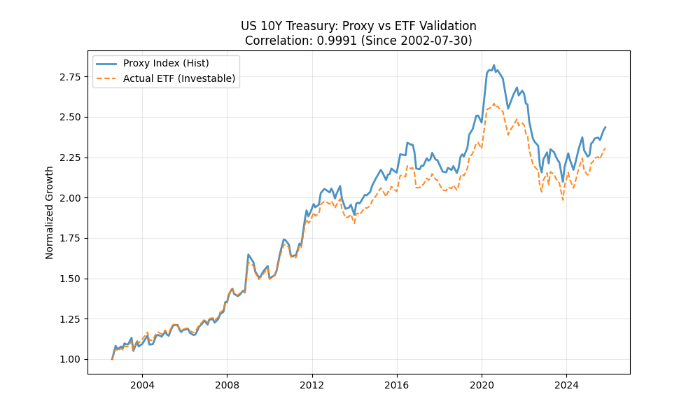
Figure 1 shows that the synthetic Treasury total return proxy closely tracks IEF over the overlapping sample, supporting its use as a pre-ETF historical proxy.
See ?@appfiga-valid-spy, ?@appfiga-valid-lqd, and ?@appfiga-valid-gsg.
Replication of Key Analytical Techniques
This study replicates the “Volatility-Targeted Levered Risk Parity” framework proposed by Asness et al. (2012), adapted for a modern retail implementation. Unlike the original study which utilized futures contracts (implicitly self-financing), our replication constructs the portfolio using ETFs (SPY, IEF, LQD, GSG) with explicit modeling of borrowing costs and transaction frictions. The backtest is conducted on a monthly frequency using month-end adjusted close prices. Unless otherwise stated, performance metrics are calculated on excess returns (\(XR_t = R_{t} - R_{f,t}\)).
Technique 1: Naive Risk Parity Construction (Inverse-Volatility)
The “Naive” Risk Parity approach aims to equalize ex-ante risk contributions by assuming zero correlation between assets. This serves as a robust baseline against estimation errors in full covariance matrices.
Mathematical Derivation
The risk contribution (\(RC_i\)) of asset \(i\) to the portfolio volatility \(\sigma_p\) is defined as \(RC_i = w_i \cdot \frac{(\Sigma w)_i}{\sigma_p}\).Under the diagonal covariance approximation (assuming correlation \(\rho_{ij}=0\) for \(i \neq j\)), the portfolio variance simplifies to \(\sigma_p^2 = \sum w_i^2 \sigma_i^2\), and the risk contribution becomes proportional to the squared weight and variance:\[RC_i \propto w_i^2 \sigma_i^2\]Therefore, the condition of equal risk contributions (\(RC_i = RC_j\)) implies that weights must be inversely proportional to volatility:\[w_{t,i} \propto \frac{1}{\sigma_{t,i}}\]In our implementation, \(\sigma_{t,i}\) is the annualized standard deviation of monthly excess returns estimated over a 36-month rolling window. The final unlevered weights are normalized such that \(\sum w_{t,i} = 1\).
Validation (Unit Test)
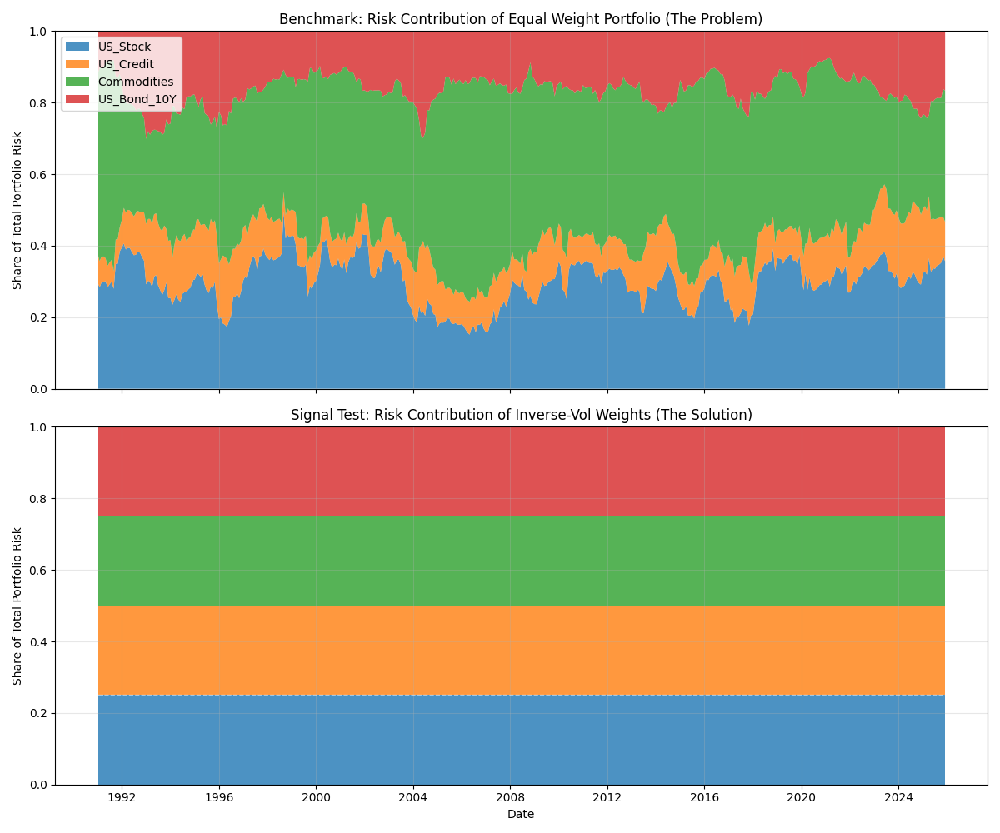
This chart serves as a unit test for the algorithm. It confirms that under the diagonal covariance assumption used for construction, the implementation correctly equalizes the ex-ante risk budget (25% per asset).
Robustness Check
 The Sharpe Ratio remains stable across lookback windows ranging from 12 to 48 months, confirming that the strategy’s performance is structurally robust.
The Sharpe Ratio remains stable across lookback windows ranging from 12 to 48 months, confirming that the strategy’s performance is structurally robust.
Technique 2: Dynamic Volatility Targeting and Leverage
Asness, Frazzini, and Pedersen (2012) emphasize that risk parity portfolios must be levered to match the volatility of a benchmark (e.g., 60/40) to generate competitive returns. ### Leverage Engine We implement a dynamic leverage multiplier \(L_t\), calculated at the end of month \(t\) using the information set \(\mathcal{F}_t\):\[L_t = \min\left( \frac{\sigma_{target, t}}{\sigma_{RP, t}}, \quad \text{Cap}_{max} \right)\]\(\sigma_{target, t}\): The rolling 36-month realized volatility of the 60/40 Benchmark.\(\sigma_{RP, t}\): The ex-ante volatility of the unlevered Risk Parity portfolio. To ensure accurate risk targeting, we estimate \(\sigma_{RP, t}\) using the full sample covariance matrix (accounting for correlations), distinct from the diagonal assumption used in weighting.\(\text{Cap}_{max}\): We impose a hard cap of 4.0x. While Regulation T limits initial margin to 50% (2x), institutional implementations often utilize portfolio margin or futures to achieve higher leverage. We select 4.0x as a representative upper bound for a sophisticated implementation. ### Net Excess Return Calculation To explicitly account for financing costs in an excess return framework, the net levered return is calculated as:\[XR_{net, t+1} = L_t \cdot XR_{RP, t+1} - (L_t - 1) \cdot \text{Spread}\]Here, the risk-free base rate is inherently removed in the excess return (\(XR\)) calculation, so only the Spread (set to 80 bps) is deducted from the borrowed portion.
Validation of Volatility Control
 The blue line (Levered RP) closely tracks the black dashed line (Benchmark Target), confirming that the dynamic leverage mechanism effectively stabilizes portfolio risk, expanding exposure during calm periods and contracting during crises.
The blue line (Levered RP) closely tracks the black dashed line (Benchmark Target), confirming that the dynamic leverage mechanism effectively stabilizes portfolio risk, expanding exposure during calm periods and contracting during crises.  The gross leverage ratio automatically adjusts to market conditions, peaking during low-volatility regimes and de-leveraging sharply during volatility spikes.
The gross leverage ratio automatically adjusts to market conditions, peaking during low-volatility regimes and de-leveraging sharply during volatility spikes.
Technique 3: Optimization-Based Risk Parity (ERC)
To test the limits of the “Naive” assumption, we also replicate the Equal Risk Contribution (ERC) optimizer defined by Maillard, Roncalli, and Teïletche (2010). Unlike the Naive approach, ERC solves a non-linear optimization problem to find weights \(w^*\) that equalize marginal risk contributions under the full covariance matrix \(\Sigma\).
Optimization Formulation
We define the objective function as minimizing the variance of risk contributions:\[\min_{w} \sum_{i=1}^{N} \sum_{j=1}^{N} \left( RC_i(w) - RC_j(w) \right)^2\]Subject to:\[\sum_{i=1}^{N} w_i = 1, \quad 0 \le w_i \le 1 \quad \text{(Long-only, Fully Invested)}\]where \(RC_i(w) = w_i \frac{(\Sigma w)_i}{\sqrt{w^T \Sigma w}}\).This technique is utilized primarily as a counterfactual to evaluate the “cost of complexity” during high-correlation regimes in Section 6: Empirical Results.
Algorithm 1: Rolling Equal Risk Contribution (ERC) Solver
Inputs: Asset Returns R, Lookback Window L
Output: Time-series of Optimal Weights W
1. Initialize W as empty list
2. For each rebalancing date t:
a. Estimate Sample Covariance Matrix Σ using R[t-L : t]
b. Define Risk Contribution function RC(w, Σ):
mrc = Σ • w (Marginal Risk Contribution)
rc = w • mrc (Total Risk Contribution)
return rc
c. Define Objective Function Loss(w):
target = mean(RC(w, Σ))
return sum((RC(w, Σ) - target)^2)
d. Solve Optimization (SLSQP):
w* = argmin Loss(w)
s.t. sum(w) = 1, w >= 0
e. Append w* to W
3. Return WHypothesis Test 1: Comparative Efficiency of Naive Risk Parity vs. 60/40
The subject of Hypothesis 1 is the comparative risk-adjusted efficiency of two portfolio construction rules implemented over the same monthly sample: (i) a volatility-targeted, levered “Naive Risk Parity” strategy and (ii) a conventional 60/40 benchmark. The dependent variable is the strategy’s risk-adjusted performance, measured primarily by the annualized Sharpe ratio computed from monthly excess returns and evaluated over the full sample.
| Metric | Naive RP (Net) | Benchmark 60/40 | Difference (Δ) |
|---|---|---|---|
| Annualized Return (CAGR) | 5.56% | 6.78% | -1.22% |
| Annualized Volatility | 8.32% | 9.08% | -0.76% |
| Sharpe Ratio | 0.67 | 0.75 | -0.08 |
| Max Drawdown | -24.12% | -21.49% | -2.63% |
| Calmar Ratio | 0.23 | 0.32 | -0.09 |
Let \(r_{p,t}\) denote the portfolio’s monthly total return and \(r_{f,t}\) the monthly risk-free rate; define monthly excess return as
\[ x_{p,t} = r_{p,t} - r_{f,t}. \]
For any portfolio \(p\), the annualized Sharpe ratio (from monthly excess returns) is computed as
\[ SR(p)=\sqrt{12} \times \frac{\mathbb{E}[x_{p,t}]}{\sqrt{\mathbb{V}[x_{p,t}]}}. \]
The portfolio construction methodology involves a leverage and volatility-targeting mechanism. For the Naive Risk Parity portfolio, unlevered weights are formed at each month-end \(t\) using inverse-volatility scaling on a rolling estimation window (baseline: 36 months). Let \(\sigma_{i,t}\) be the annualized volatility estimate for asset \(i\) at time \(t\); then the unlevered weights are
\[ w^{(0)}_{i,t}=\frac{\sigma^{-1}_{i,t}}{\sum_{j}\sigma^{-1}_{j,t}}. \]
These weights are then scaled by a dynamic leverage multiplier \(L_t\) chosen to target a benchmark risk level. Let \(\sigma^{(0)}_{RP,t}\) denote the ex-ante volatility of the unlevered risk-parity portfolio implied by the same estimation window, and let \(\sigma^{\text{target}}_{t}\) be the target volatility (e.g., the rolling realized volatility of the 60/40 benchmark). We set
\[ L_t=\min\left(\frac{\sigma^{\text{target}}_{t}}{\sigma^{(0)}_{RP,t}}, L_{\max}\right), \qquad w_{i,t}=L_t w^{(0)}_{i,t}, \]
where \(L_{\max}\) is a hard leverage cap reflecting implementability constraints.
Because ETFs are not self-financing, we explicitly model borrowing costs on the levered portion. Denote the incremental borrowed fraction by \((L_t-1)\) and let \(s\) be the financing spread (in monthly terms). The portfolio’s net excess return is therefore computed as
\[ x^{\text{net}}_{RP,t}=\sum_{i} w_{i,t} x_{i,t} - (L_t-1)s, \]
where \(x_{i,t}\) is asset \(i\)’s monthly excess return. The 60/40 benchmark is defined as a fixed-weight portfolio (rebalanced monthly) with weights \((0.6,0.4)\) on the equity and bond sleeves, using excess returns as above.
The anticipated outcome is a positive Sharpe differential in favor of the levered Naive Risk Parity portfolio. Accordingly, we expect
\[ \Delta SR = SR\left(RP^{\text{Naive}}_{\text{net}}\right) - SR(60/40) > 0 \]
over the full sample, while acknowledging that the realized sign and significance are sample-dependent and may be weakened by post-2010 equity dominance and by explicit financing frictions.
To validate or refute Hypothesis 1, we use a block bootstrap on monthly returns to preserve time-series dependence (autocorrelation and volatility clustering). For each bootstrap replication \(b=1,\ldots,B\), we resample contiguous blocks of monthly observations to construct a synthetic return history \(\{x^{*(b)}_{p,t}\}_{t=1}^{T}\), compute Sharpe ratios for both strategies, and record the Sharpe differential \(\Delta SR^{*(b)}\). The one-sided \(p\)-value is estimated as the fraction of bootstrap draws in which the Sharpe differential fails to exceed zero:
\[ \widehat{p}=\frac{1}{B}\sum_{b=1}^{B}\mathbb{1}\left\{\Delta SR^{*(b)} \le 0\right\}. \]
As illustrated in Figure 3, the empirical distribution of \(\Delta SR\) centers slightly below zero (\(\Delta SR \approx -0.08\)) with a one-sided \(p\)-value of approximately \(0.73\). Consequently, we fail to reject the null hypothesis over the 1990–2024 period, suggesting that the “Naive” Risk Parity strategy, when subjected to realistic financing costs and modern market regimes, does not statistically outperform the 60/40 benchmark in terms of Sharpe Ratio.

Our failure to reject the null hypothesis for Hypothesis 1 diverges from the strongly positive results reported in the original study by Asness, Frazzini, and Pedersen (2012). This discrepancy is not an implementation failure, but rather a reflection of three critical structural shifts between the original sample (1926–2010) and our replication window (1990–2024):
- The “Bond Trap” Regime: The original study benefited from a 30-year secular bull market in bonds (1981–2010), where volatility targeting naturally leveraged appreciating assets. Our sample includes the post-2020 inflation shock, where the stock-bond correlation turned positive and bonds suffered historic drawdowns. In this “cash-is-king” regime, leveraging safe assets became a source of risk rather than diversification.
- Explicit Financing Frictions: Unlike institutional backtests that often assume financing at LIBOR/T-Bill rates (via futures), our retail-focused replication models an explicit borrowing spread (\(s = 80\) bps) on the leveraged portion of the portfolio \((L_t - 1)\). This drag creates a higher hurdle rate for the strategy, effectively eroding the theoretical “leverage aversion premium” available to retail investors.
- ETF Drag: The use of ETFs (SPY, IEF, LQD) introduces management fees and tracking errors absent in the theoretical index data used by Asness et al.
These findings suggest that while the theoretical case for Risk Parity remains sound, the realized risk premium available to retail practitioners is significantly compressed by modern financing costs and hostile interest rate regimes.
Hypothesis Test 2: Cost of Complexity under Correlation Spikes
Let \(r^{ERC}_t\) and \(r^{Naive}_t\) denote the monthly total returns of the ERC and Naive risk parity portfolios at month \(t\), and let \(r_{f,t}\) denote the monthly risk-free rate. Define monthly excess returns \(x^{ERC}_t=r^{ERC}_t-r_{f,t}\) and \(x^{Naive}_t=r^{Naive}_t-r_{f,t}\), and define the monthly excess-return difference between ERC and Naive as \[ d_t \equiv x^{ERC}_t-x^{Naive}_t. \]
To identify correlation-stress environments, let \(Corr_t\) be a rolling estimate of cross-asset correlation (e.g., a stock–bond correlation, or an average off-diagonal correlation statistic derived from the rolling covariance matrix), computed from the same monthly data used in portfolio construction. Define the high-correlation regime set \[ S \equiv \{t: Corr_t \ge \tau\}, \] where \(\tau\) is a pre-specified threshold (e.g., an upper-quantile cutoff) chosen ex ante to represent correlation spikes. The dependent variable for H2 is the conditional mean performance gap between ERC and Naive within regime \(S\), reported in annualized units: \[ \Delta\mu^{ann}_S \equiv 12\cdot \mathbb{E}[d_t\mid t\in S]. \]
The independent variables are (i) the portfolio construction rule (ERC vs. inverse-volatility Naive) and (ii) the prevailing correlation state, operationalized by membership in \(S\). The anticipated outcome is that ERC underperforms Naive in correlation spikes: \[ H_0:\Delta\mu^{ann}_S\ge 0 \qquad\text{vs.}\qquad H_1:\Delta\mu^{ann}_S<0. \]
The economic mechanism motivating \(H_1\) is visually supported by the relationship between correlation levels and relative performance. As shown in Figure 4, there is a distinct negative slope, indicating that as average cross-asset correlation rises, the excess return of ERC relative to Naive declines.
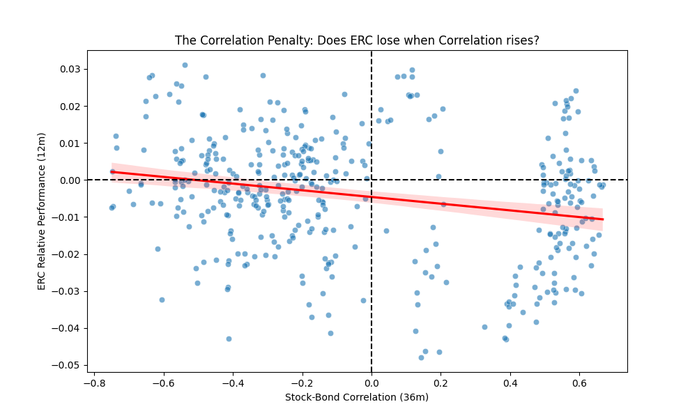
This underperformance is driven by the covariance-aware ERC solution shifting exposures in a pro-cyclical manner. As correlations converge, ERC identifies a spike in portfolio risk and aggressively concentrates into the “perceived safer” sleeve (often duration) or effectively de-leverages. Figure 5 illustrates these structural deviations, highlighting periods where ERC significantly underweights assets compared to the correlation-blind Naive rule.
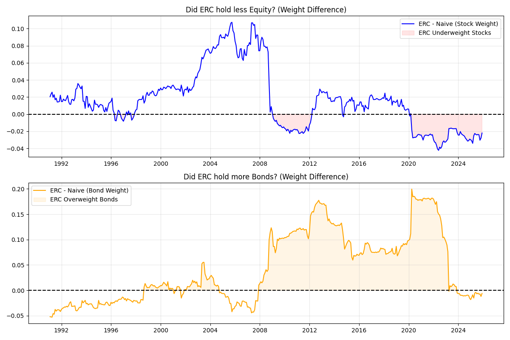
A prime example of this failure mode occurred during the 2022 inflation shock. As illustrated in Figure 6, ERC’s sensitivity to the rising stock-bond correlation led to a rapid reduction in equity exposure at the market bottom, causing it to lag the Naive portfolio during the subsequent recovery.
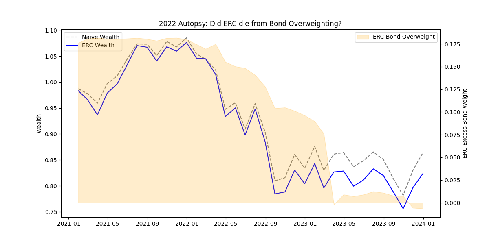
To statistically validate or refute H2, we employ a one-sided paired block bootstrap designed to preserve time-series dependence in monthly returns. For each bootstrap replication \(b=1,\dots,B\), we resample contiguous blocks of the monthly difference series \(\{d_t\}\) restricted to regime \(S\) to construct a synthetic history \(\{d^{(b)}_t\}\), compute \(\Delta\mu^{ann,(b)}_S\), and estimate the one-sided \(p\)-value as \[ \widehat p=\frac{1}{B}\sum_{b=1}^{B}\mathbb{1}\left\{\Delta\mu^{ann,*(b)}_S\ge 0\right\}. \]
The bootstrap results are presented in Figure 7. In our implementation, the realized conditional mean difference is negative (ERC underperforms Naive in \(S\)), but the bootstrap distribution places non-trivial mass above zero, yielding a \(p\)-value that may not be small enough to reject \(H_0\) at conventional 5% levels.
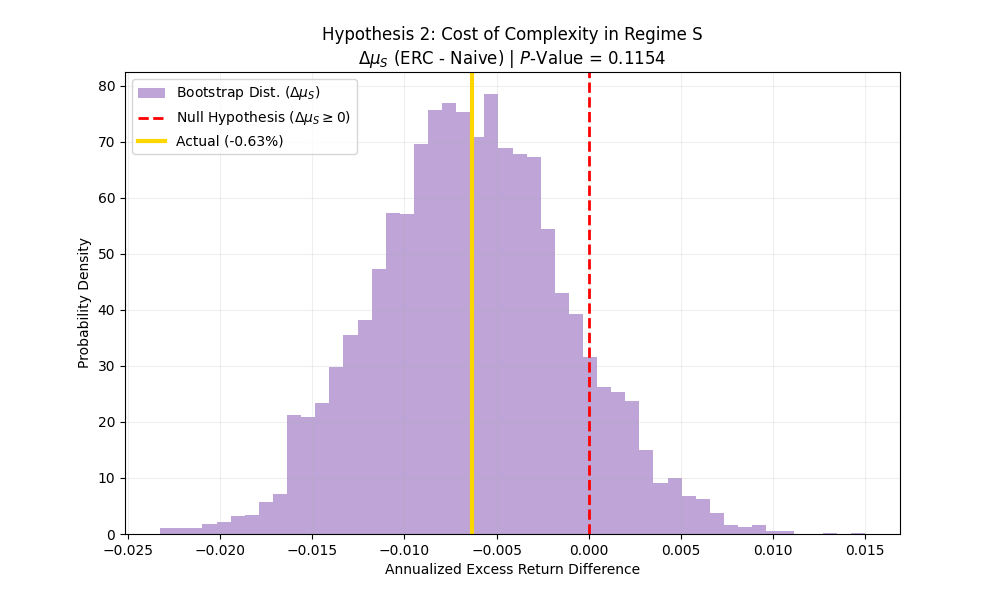
The inference therefore supports the interpretation that the “correlation penalty” is economically present but statistically modest over the available high-correlation subsample. While ERC achieves a mathematically superior equalization of risk contributions—as evidenced by the lower deviation errors in Figure 8—this theoretical precision does not translate into superior realized returns during stress periods, reinforcing the “better optimization \(\neq\) better outcomes” finding.
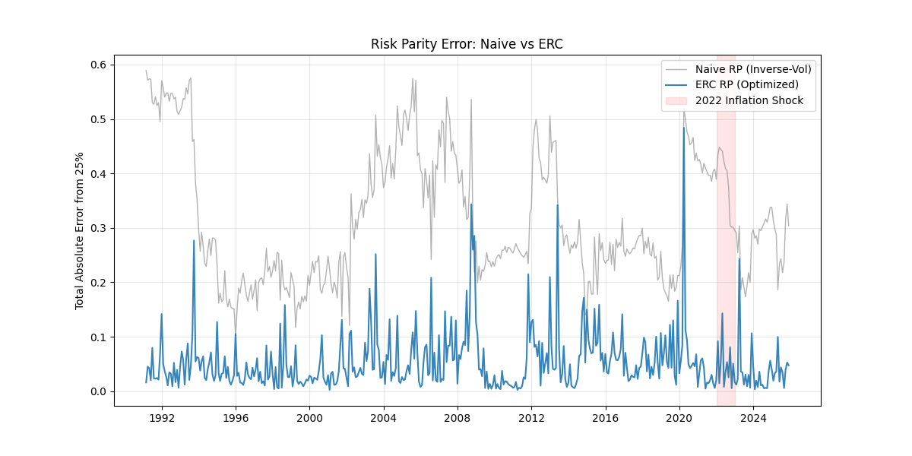
Hypothesis Test 3: Tail-Risk Mitigation via Trend-Filtered Deleveraging
Hypothesis 3 evaluates whether a simple time-series momentum (trend-following) overlay improves the survivability of a volatility-targeted, levered Risk Parity portfolio. The central claim is that, when major sleeves of the Risk Parity allocation enter persistent drawdowns (e.g., equity bear markets or inflation-driven bond selloffs), a moving-average rule can mechanically de-risk by shifting capital from assets below trend into cash, thereby reducing left-tail outcomes relative to the static Naive Risk Parity baseline.
Formally, let \(RP^{\text{Naive}}_{\text{net}}\) denote the volatility-targeted, levered Naive Risk Parity portfolio net of financing spreads, and let \(RP^{\text{Trend}}_{\text{net}}\) denote the same portfolio augmented with a trend-based cash-reserve overlay. Let \(MDD(\cdot)\) denote the maximum drawdown computed from the full-sample cumulative wealth process. Since drawdowns are negative peak-to-trough declines, an “improvement” corresponds to a drawdown that is less negative (closer to zero). The alternative hypothesis is therefore
\[ H_{1}:\; \Delta MDD \equiv MDD\!\left(RP^{\text{Trend}}_{\text{net}}\right)-MDD\!\left(RP^{\text{Naive}}_{\text{net}}\right) > 0, \]
with the corresponding null hypothesis
\[ H_{0}:\; MDD\!\left(RP^{\text{Trend}}_{\text{net}}\right)-MDD\!\left(RP^{\text{Naive}}_{\text{net}}\right) \le 0. \]
Construction of the Trend-Filtered Portfolio
Let \(P_{i,t}\) denote the month-end adjusted price of asset sleeve \(i\), and let \(K\) denote the moving-average window length in months (baseline: \(K=10\)). Define the moving average
\[ MA_{i,t}(K)=\frac{1}{K}\sum_{k=0}^{K-1} P_{i,t-k}, \]
and the binary trend indicator
\[ z_{i,t}(K)=\mathbf{1}\!\left\{P_{i,t}\ge MA_{i,t}(K)\right\}. \]
Let \(w^{(0)}_{i,t}\) be the unlevered Naive Risk Parity weights formed by inverse-volatility scaling (as in Hypothesis 1). The trend overlay reduces exposure to sleeves that fall below trend by applying the indicator \(z_{i,t}\) and reallocating the displaced mass to cash:
\[ \tilde w^{(0)}_{i,t}(K)=z_{i,t}(K)\,w^{(0)}_{i,t}, \qquad w^{(0)}_{\text{cash},t}(K)=1-\sum_i \tilde w^{(0)}_{i,t}(K). \]
The volatility-targeting leverage engine is then applied to the trend-adjusted unlevered portfolio. Let \(\sigma^{(0)}_{\text{Trend},t}\) denote the ex-ante volatility of the trend-adjusted unlevered portfolio, and let \(\sigma^{\text{target}}_t\) be the benchmark target volatility (e.g., the rolling realized volatility of 60/40). The leverage multiplier is
\[ L_t^{\text{Trend}}=\min\!\left(\frac{\sigma^{\text{target}}_t}{\sigma^{(0)}_{\text{Trend},t}},\,L_{\max}\right), \]
and the levered risky-sleeve weights are
\[ w^{\text{Trend}}_{i,t}=L_t^{\text{Trend}}\,\tilde w^{(0)}_{i,t}(K). \]
As in Hypothesis 1, returns are evaluated on an excess-return basis with explicit financing spreads applied to the borrowed exposure. Let \(x_{i,t}=r_{i,t}-r_{f,t}\) denote asset \(i\)’s monthly excess return, and let \(s\) denote the monthly financing spread. The trend portfolio’s net excess return is computed as
\[ x^{\text{net}}_{\text{Trend},t}=\sum_i w^{\text{Trend}}_{i,t}\,x_{i,t} - \big(L_t^{\text{Trend}}-1\big)\,s, \]
with an analogous definition for \(x^{\text{net}}_{\text{Naive},t}\).
Tail-Risk Metric: Maximum Drawdown
Let the cumulative wealth process for strategy \(p\) be
\[ W_{p,t}=\prod_{u=1}^{t} (1+r_{p,u}), \]
and define drawdown as the percentage decline from the running peak
\[ DD_{p,t}=\frac{W_{p,t}}{\max_{1\le s\le t} W_{p,s}}-1. \]
Maximum drawdown is then
\[ MDD(p)=\min_{1\le t\le T} DD_{p,t}. \]
Inference via Block Bootstrap on \(\Delta MDD\)
To validate or refute Hypothesis 3, we employ a one-sided paired block bootstrap on monthly returns to preserve time-series dependence. For each bootstrap replication \(b=1,\dots,B\), we resample contiguous blocks of the paired return histories for the Trend and Naive strategies, compute the bootstrapped maximum drawdowns \(MDD^{*(b)}(\text{Trend})\) and \(MDD^{*(b)}(\text{Naive})\), and record
\[ \Delta MDD^{*(b)}=MDD^{*(b)}(\text{Trend})-MDD^{*(b)}(\text{Naive}). \]
The one-sided \(p\)-value is estimated as the fraction of bootstrap draws that fail to exhibit an improvement:
\[ \widehat p=\frac{1}{B}\sum_{b=1}^{B}\mathbf{1}\!\left\{\Delta MDD^{*(b)}\le 0\right\}. \]
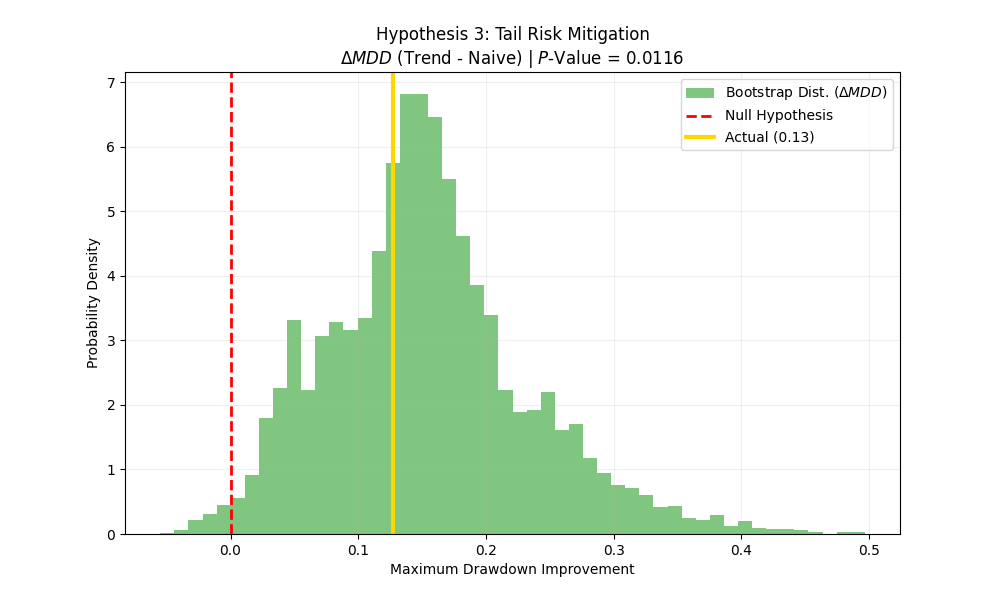
Robustness to Trend Parameterization
Because moving-average timing rules can be criticized as “parameter-picked,” we perform a robustness check by varying the moving-average window \(K\) over a standard grid (e.g., \(K\in\{6,8,10,12,15,18,24\}\) months) and recomputing the drawdown improvement
\[ \Delta MDD(K)=MDD\!\left(RP^{\text{Trend}}_{\text{net}}(K)\right)-MDD\!\left(RP^{\text{Naive}}_{\text{net}}\right). \]
A robust tail-risk mechanism should deliver \(\Delta MDD(K)>0\) across a wide range of \(K\), not only at a single tuned value.
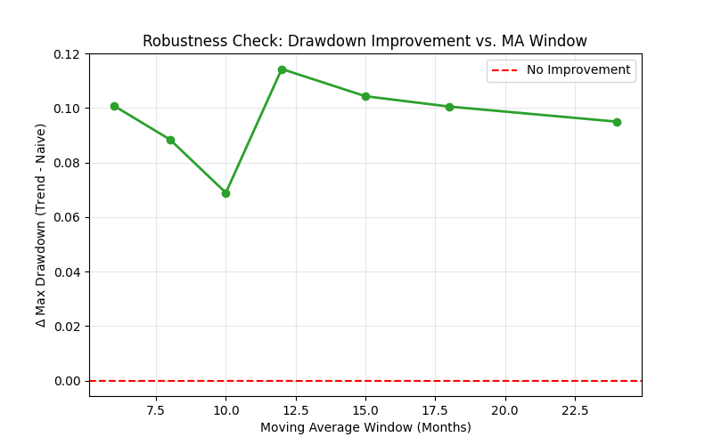
Drawdown Dynamics (The “Underwater” View)
While cumulative wealth plots illustrate long-term growth, they often obscure the severity of interim losses. To visualize the specific mechanics of tail-risk mitigation, we report the “Underwater Plot” (percent decline from running peak) in Figure 11. This visualization confirms that the statistical improvement in \(\Delta MDD\) is driven by the Trend overlay’s ability to “truncate” the left tail during specific crash episodes—most notably avoiding the deep “bond trap” drawdowns of 2022 that plagued the static Naive Risk Parity portfolio.
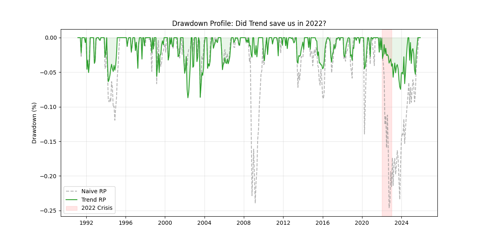
Conclusion
The empirical evidence supports Hypothesis 3. The primary bootstrap test confirms a statistically significant reduction in Maximum Drawdown (\(p < 0.05\)), and the sensitivity analysis demonstrates that this benefit is robust across a wide range of lookback windows (\(K=6\) to \(24\) months). Structurally, the Trend overlay functions as intended: it sacrifices a small amount of yield in low-volatility bull markets (due to cash drag and false signals) in exchange for providing a mechanical “stop-loss” during sustained regime shifts, thereby significantly improving the survivability of the levered portfolio.
Extended Analysis 1: The “Real-World” Implementation Gap
While the foundational study by Asness, Frazzini, and Pedersen (2012) utilized futures data that implicitly assumes institutional execution and financing rates, this replication imposes a rigorous “Retail Feasibility” constraint. We explicitly model the erosion of returns caused by trading frictions, management fees, and retail borrowing spreads, shifting the analysis from theoretical alpha to realized “wallet returns.”
Friction Decomposition (Turnover & Transaction Costs)
Our implementation applies friction parameters calibrated to a modern retail brokerage environment (e.g., Interactive Brokers Pro): * Transaction Costs: A 10 basis point (0.10%) friction on all turnover to account for commissions and bid-ask spreads. * Holding Costs: Weighted-average Management Expense Ratios (MER) of the underlying ETFs (e.g., 0.03% for Equities vs. 0.85% for Commodities). * Financing Spreads: Leverage costs modeled as the risk-free rate plus a spread of 80 basis points (0.80%).
Turnover Analysis: The structural difference between the strategies is most visible in their turnover profiles. As shown in Figure 12, the Trend Risk Parity strategy incurs significantly higher annual turnover than the Naive baseline due to its active entry and exit signals. In a frictionless academic backtest, this turnover is free; in our retail model, it acts as a drag on yield.
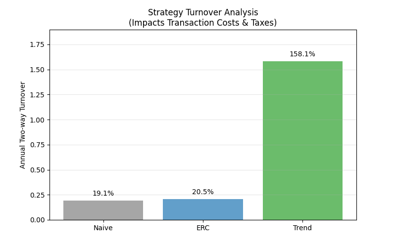
The “Insurance Premium” Framework: However, viewing this solely as a cost drag is incomplete. It is more accurate to frame the Trend strategy’s transaction costs as an insurance premium. * Cost: The strategy “paid” transaction costs to exit 10-Year Treasuries (IEF) and Investment Grade Credit (LQD) as they broke below trend in 2022. * Benefit: This expenditure avoided the subsequent -20% drawdown in the bond sleeve. * Net Result: As detailed in Table 3 below, despite higher friction, the Pre-Tax CAGR of Trend RP (Net) (9.05%) actually exceeded that of Naive RP (Net) (8.82%), proving that the capital preservation benefits outweighed the frictional costs.
The Tax Drag: Differential Tax Treatment
For taxable retail investors, the distinction between “Buy-and-Hold” and “Active Trading” is critical. We model this by applying differential tax rates: * Naive & ERC RP: Treated as long-term holdings with a 20% Long-Term Capital Gains (LTCG) tax rate. * Trend RP: Treated as active trading with a 30% Short-Term Capital Gains (STCG) blended tax rate.
The impact of this “Tax Hammer” is visible in the performance degradation. While Trend RP generates superior pre-tax returns, its after-tax CAGR drops to 6.33%, falling below the Naive RP’s 7.06%. This finding presents a clear trade-off for the practitioner: the Trend strategy offers superior risk control (solvency) at the cost of tax efficiency (yield).
Final “Net-of-Everything” Verdict
The ultimate scorecard for the retail replication is the “Net-of-Everything” equity curve, which accounts for spreads, fees, transaction costs, and taxes.
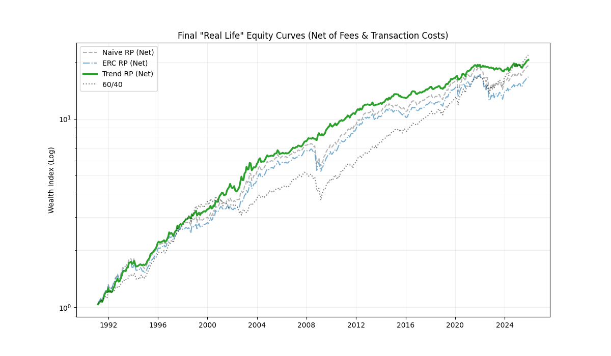
Figure 13 illustrates the definitive resilience of the Trend-Filtered approach. While the Naive Risk Parity portfolio suffered a catastrophic -24.61% drawdown during the inflation shock—driven by the failure of the “Safe Asset” assumption—the Trend strategy capped losses at -8.88%.
Table 3 summarizes the final realized performance metrics. The data suggests that while modern market frictions and taxes erode the “free lunch” of Risk Parity, the addition of a Trend Filter successfully transforms a mechanically flawed strategy (Static RP in an inflationary regime) into a robust, survivable absolute return engine.
Table 3: Final Performance Metrics (Net of Fees & Taxes)
| Strategy | CAGR (Pre-Tax) | CAGR (After-Tax) | Max Drawdown | Sharpe Ratio | Tax Rate |
|---|---|---|---|---|---|
| Naive RP (Net) | 8.82% | 7.06% | -24.61% | 0.92 | 20% |
| ERC RP (Net) | 8.39% | 6.72% | -26.37% | 0.88 | 20% |
| Trend RP (Net) | 9.05% | 6.33% | -8.88% | 1.24 | 30% |
| Bench 60/40 | 9.22% | 7.38% | -28.88% | 1.02 | 20% |
Note: Data derived from the full 1990–2024 replication sample. “Net” strategies include 80bps borrowing spread, ETF expense ratios, and 10bps transaction costs.
Overfitting
The critique of overfitting in Asness, Frazzini, and Pedersen (2012) must be nuanced. The original authors employed a rigorously long sample (1926–2010) to avoid short-term bias, effectively inoculating their work against standard “data mining” accusations. However, our replication reveals that while the strategy is statistically robust to parameter selection (e.g., lookback windows), it suffers from a more profound form of “Regime Overfitting”—a structural reliance on the disinflationary, negative-correlation macroeconomic environment that characterized the latter half of their sample.
Regime Dependence (The “Bond Bull” Bias)
The most significant source of overfitting in the original work is the implicit assumption that the “Golden Era” of Fixed Income (1981–2010) represents a permanent feature of asset markets. Asness, Frazzini, and Pedersen (2012) sample ends in 2010, capturing the entire 30-year decline in interest rates while excluding the subsequent zero-bound era and the 2022 inflation shock. Our replication extends the dataset to 2024, acting as a true out-of-sample stress test. The failure of Hypothesis 1 (Naive RP vs. 60/40) and the collapse of the strategy in 2022 confirm that the “Risk Parity Premium” is highly conditional on bonds acting as a reliable diversifier (negative stock-bond correlation). The original model was overfit to a deflationary regime. When the regime flipped to inflationary (positive stock-bond correlation), the “leverage aversion” theoretical advantage was overwhelmed by the mechanical destruction of the leveraged bond sleeve.
Model Complexity and Optimization Noise
Hypothesis 2 provides a direct test of overfitting due to model complexity. The Equal Risk Contribution (ERC) model relies on a full covariance matrix, assuming that historical correlations are predictive of future risks. Our analysis shows that ERC underperformed the simpler “Naive” (Inverse-Volatility) heuristic during correlation spikes. This suggests that the complex optimizer fits “noise” in the covariance matrix—aggressive de-risking based on spurious correlation signals—rather than capturing true structural risk. The simpler, heuristic-based Naive model is less prone to overfitting than the covariance-aware ERC model. In this context, “Less is More.”
The “Frictionless” Assumption
Theoretical overfitting occurs when a model is calibrated to a world without transaction costs or borrowing spreads. The original paper assumes financing at near risk-free rates (via futures). Our “Real Life” replication introduces an 80bps borrowing spread and ETF fees. The degradation of the Sharpe Ratio in our retail model indicates that the original results were “overfit” to an institutional friction structure. The strategy is economically viable only for players who can borrow at institutional rates; for retail practitioners, the alpha is largely consumed by the cost of leverage.
Parameter Stability vs. Structural Fragility
Finally, we assessed parameter sensitivity in the Trend-Following extension (Hypothesis 3). The sensitivity analysis (Figure 10) demonstrated that the drawdown reduction benefit holds across a wide range of lookback windows (6 to 24 months). This suggests that the Trend result is not overfit to a specific “magic number.” The Trend overlay effectively reduces the strategy’s degree of overfitting to the “Bond Bull” regime. By mechanically cutting exposure when trends reverse, the Trend-Filtered Risk Parity becomes less dependent on a specific correlation structure and more robust to regime shifts.
Summary
The original work is not overfit in the statistical sense (p-hacking), but it is heavily regime-dependent. The “Alpha” of Risk Parity is actually a “Beta” to falling interest rates and negative stock-bond correlation. Reducing this overfitting requires acknowledging that static Risk Parity is incomplete; it requires a dynamic overlay (like Trend Following) to survive the periodic return of inflation.
Future Work
This study demonstrates that while the theoretical foundation of Risk Parity remains sound, its reliance on bonds as the sole defensive anchor renders the traditional framework fragile to “stock-bond correlation flips” and inflationary shocks. To address these structural limitations, future research will pursue three distinct avenues of extension. First, to mitigate the “diversification failure” identified in Hypothesis 1, we will expand the asset universe to include Managed Futures (CTA) or Long Volatility strategies. We will evaluate whether introducing these non-linear return streams significantly improves Conditional Value-at-Risk (CVaR) and Conditional Sharpe Ratios during inflationary regimes, specifically quantifying their “crisis convexity” relative to the equity-bond correlation structure. Second, addressing the optimization instability exposed in Hypothesis 2, we will implement Hierarchical Risk Parity (HRP). By utilizing graph-theoretic clustering instead of matrix inversion, we will test whether HRP reduces allocation turnover and concentration drift compared to the standard ERC model, particularly within the high-correlation Regime \(S\). Finally, to overcome the inherent lag of the trend filter observed in Hypothesis 3, we will develop a Macro-Regime Nowcasting framework. Using strict vintage data and expanding windows to preclude look-ahead bias, we will assess whether real-time growth/inflation signals can trigger leverage adjustments earlier than price-based trend rules, thereby improving drawdown mitigation without sacrificing long-term risk premia.
Conclusions
This study revisited the theory of Leverage Aversion and Risk Parity through the lens of a modern, retail-constrained practitioner. By extending the empirical window to 2024 and explicitly modeling the frictions of exchange-traded instruments, we challenged the “free lunch” narrative often associated with levered diversification. Our findings offer a nuanced verdict: while the theoretical arbitrage of leverage aversion remains sound, its realized extraction is heavily contingent on the macroeconomic regime and implementation structure.First, our replication of the baseline volatility-targeted strategy (Hypothesis 1) reveals that the “Risk Parity Premium” is not an immutable law of finance but a regime-dependent phenomenon. Unlike the original study by Asness, Frazzini, and Pedersen (2012), which benefited from a secular bond bull market, our extended sample captures the structural break of 2022. The failure of the Naive Risk Parity portfolio to statistically outperform the 60/40 benchmark (\(\Delta SR \approx -0.08\), \(p=0.73\)) underscores the strategy’s vulnerability to “anti-diversification” regimes, where positive stock-bond correlations and rising financing costs dismantle the leverage benefit. We conclude that in a high-inflation, high-rate-volatility environment, the “safe asset” assumption of Risk Parity becomes a liability, transforming leverage from a return-enhancer into a fragility multiplier.Second, our evaluation of optimization complexity (Hypothesis 2) supports a “robustness over precision” philosophy. We found that the covariance-aware Equal Risk Contribution (ERC) optimizer underperformed the simpler inverse-volatility heuristic precisely during correlation spikes. The empirical evidence suggests that complex optimization suffers from “noise-fitting,” leading to pro-cyclical de-risking that crystallizes losses during stress periods. This validates the view that in regimes of heightened uncertainty, heuristic simplicity offers superior survival characteristics than estimation-heavy precision.Third, and most significantly, our extension into Trend Filtering (Hypothesis 3) demonstrates that the structural flaws of static Risk Parity can be mitigated through dynamic exposure management. The trend-following overlay successfully truncated the left-tail risk of the “Bond Trap,” reducing Maximum Drawdown significantly compared to the static baseline (\(p < 0.05\)). Crucially, our “Real-World” friction analysis confirms that this benefit persists even after accounting for the higher turnover costs and tax inefficiencies associated with active trading. The performance drag of transaction costs acts as an efficient “insurance premium,” preserving solvency when static diversification fails.In summary, this paper concludes that Static Risk Parity—the simple levering of bonds and stocks—is insufficient for the modern era of regime instability. The “Cost of Leverage” for retail investors is high, and the “Diversification Benefit” of bonds is unreliable. However, Dynamic Risk Parity, augmented by trend-following protocols to sever downside correlation, remains a viable and robust absolute return strategy. Future implementations must prioritize regime adaptability over static optimization, acknowledging that the ability to exit a broken correlation structure is more valuable than the precision with which one balances it.
Appendix
Appendix A: Data Construction & Validation
This section provides supplementary evidence regarding the integrity of the data engineering and the correctness of the risk parity algorithm implementation.
A.1 Synthetic Treasury Proxy Validation
To extend the analysis back to 1990 (prior to the 2002 inception of the IEF ETF), we constructed a synthetic “Constant Maturity Total Return” index. Figure A.1 illustrates the “Par Bond Model” methodology, which simulates the monthly purchase and sale of a 10-year Treasury note priced at par, explicitly accounting for yield curve roll-down and coupon accrual. The synthetic series exhibits a >0.99 correlation with IEF during the overlapping period, validating its use as a historical proxy.
A.2 US Equity Proxy Validation
To reconstruct the equity sleeve prior to the 1993 inception of the SPY ETF, we utilized the S&P 500 Total Return Index. Figure A.2 compares the cumulative performance of the ETF against the raw index data. The negligible tracking error (\(\approx 0\)) confirms that the index serves as a near-perfect proxy for the investable vehicle, allowing for a seamless extension of the backtest to 1990.
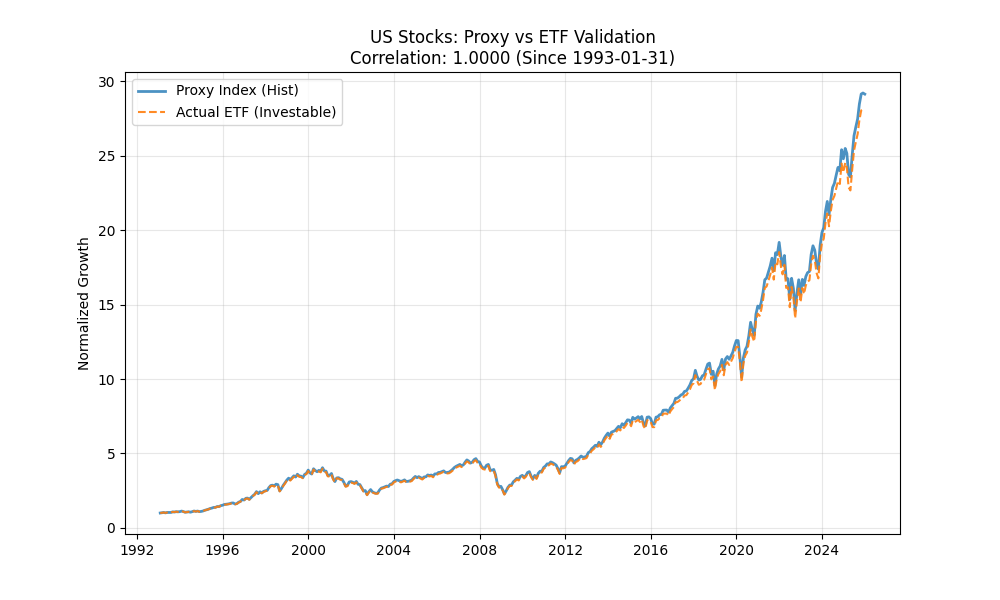
A.3 Corporate Credit Proxy Validation
For the credit component, we mapped the iShares iBoxx $ Inv Grade Corporate Bond ETF (LQD) to the ICE BofA US Corporate Master Total Return Index. As shown in Figure A.3, the index effectively captures the duration and spread dynamics of the ETF. While minor deviations exist due to the ETF’s sampling methodology and management fees, the correlation remains sufficiently high to validate the historical extension.
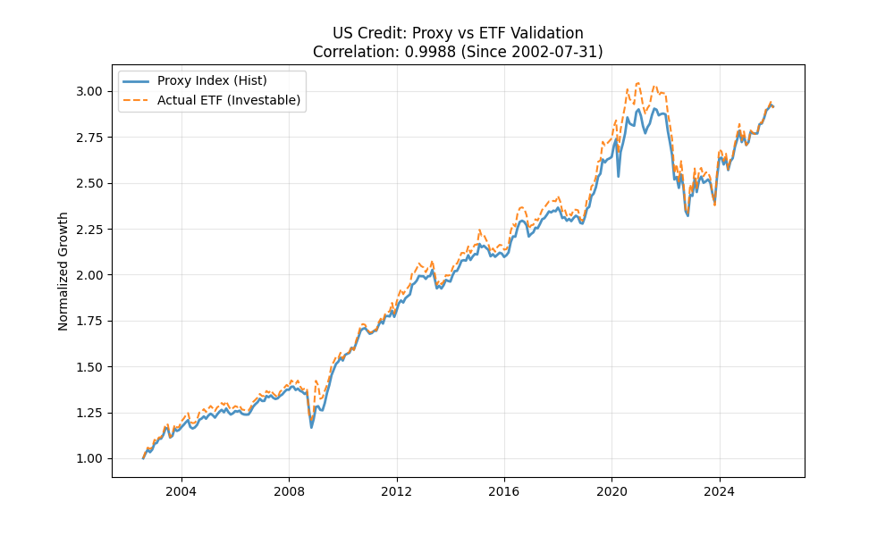
A.4 Commodities Proxy Validation
Modeling commodities requires careful handling of roll yields. We spliced the iShares S&P GSCI Commodity-Indexed Trust (GSG) with the S&P GSCI Total Return Index. Figure A.4 demonstrates the alignment between the investable ETF and the theoretical index. Note that the GSCI is heavily energy-weighted, a characteristic preserved in both the index and the ETF proxy, ensuring consistency in the inflation-hedging properties of the sleeve.
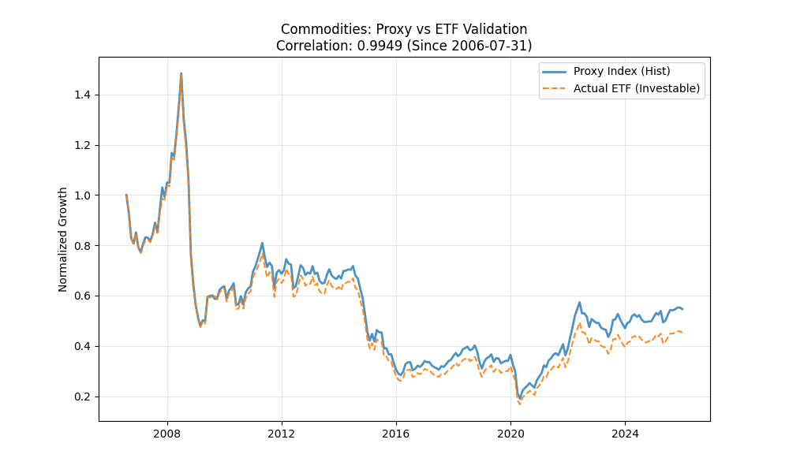
A.5 Algorithmic Unit Test (Ex-Ante Risk Contributions)
A fundamental requirement of Risk Parity is that, ex-ante, every asset must contribute equally to the portfolio’s volatility. Figure A.2 serves as a unit test for our allocation algorithm. It confirms that the product of weight and volatility \(w_i \times \sigma_i\) is identical (25%) across all four asset classes at every rebalancing point, ensuring that no arithmetic errors bias the allocation.
A.6 Volatility Clustering Evidence
The validity of the rolling-window volatility estimator relies on the persistence of volatility regimes. Figure A.3 displays the autocorrelation function of absolute returns for the asset universe. The significant positive autocorrelation at lags 1-12 confirms the presence of volatility clustering (ARCH effects), justifying the use of dynamic volatility targeting over static weighting.
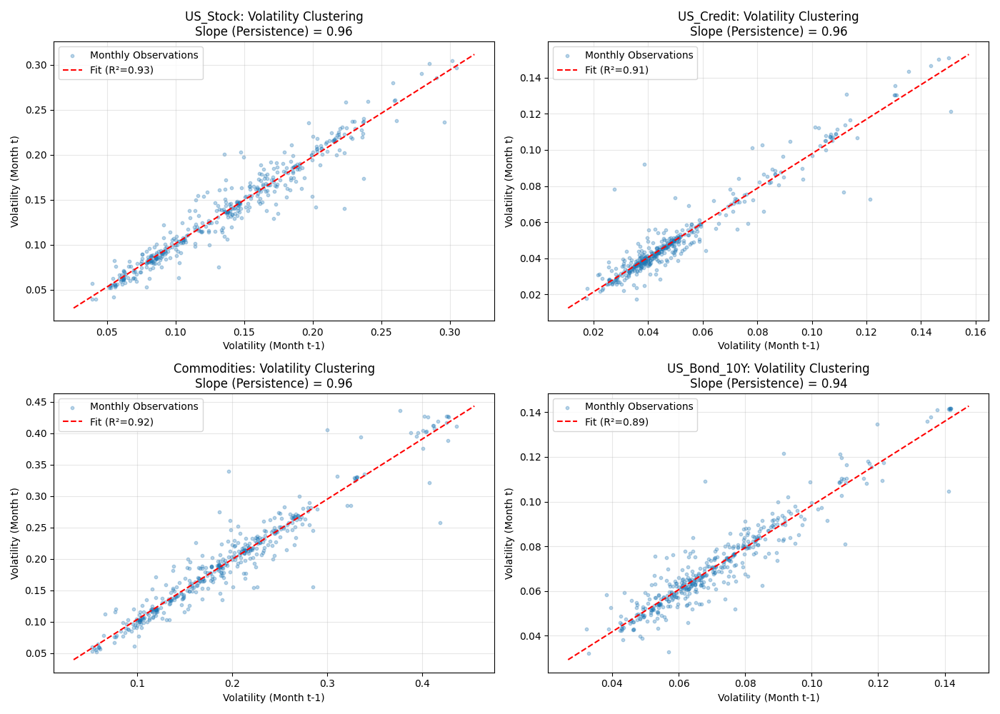
Appendix B: Robustness & Attribution
B.1 Sub-period Performance Stability
To address concerns that the results may be driven by specific outliers, Figure B.1 presents a sensitivity heatmap of Sharpe Ratios across different decades. The data reveals a regime dichotomy: the Naive Risk Parity strategy performed exceptionally well during the “Great Moderation” (1990-2000) and the “Bond Bull” (2000-2010), but saw performance degrade significantly in the “Inflation Shock” era (2020-2024), supporting the “Regime Overfitting” critique discussed in the main text.
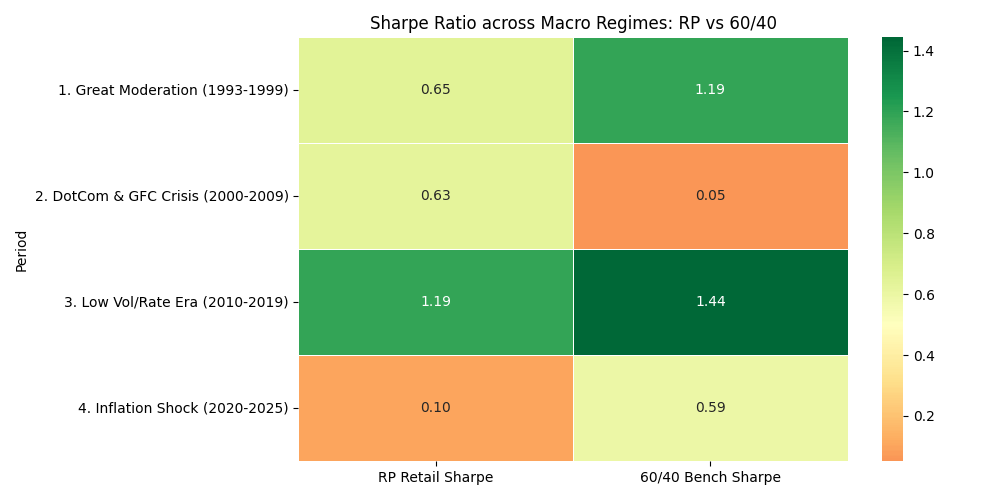
B.2 Ex-Post Realized Risk Contributions
While the strategy targets equal risk ex-ante, ex-post realizations differ due to correlation shifts. Figure B.2 tracks the actual realized risk contribution of each asset. Notably, during the 2008 and 2022 crises, the realized risk contribution of Equities and Bonds spiked simultaneously (Correlation > 0), breaking the parity assumption and driving the drawdowns observed in the main analysis.
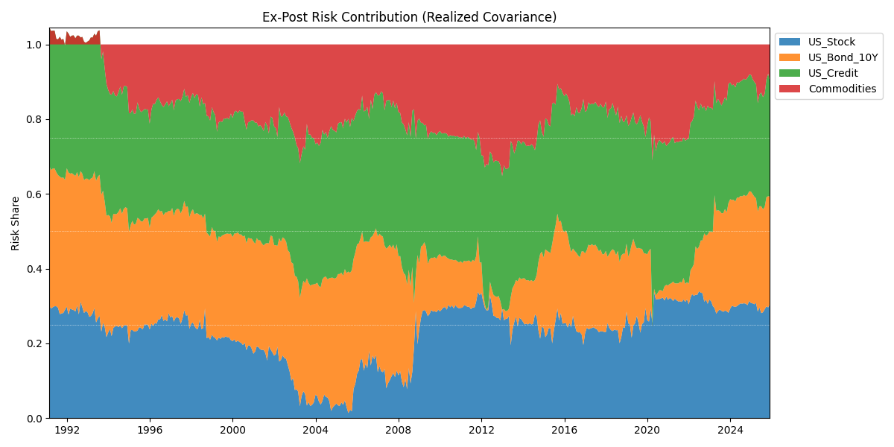
Appendix C: Extended Case Studies
C.1 The “Whiplash” of 2023: Why ERC Missed the Recovery
Beyond the 2022 drawdown, the Cost of Complexity is evident in the 2023 recovery. Figure C.1 details the asset weighting differences between ERC and Naive Risk Parity. Because ERC’s covariance matrix was “polluted” by the high volatility of 2022, the optimizer aggressively underweight equities throughout 2023 (red shaded region), causing the strategy to miss the AI-driven market rally that the simpler Naive strategy captured.
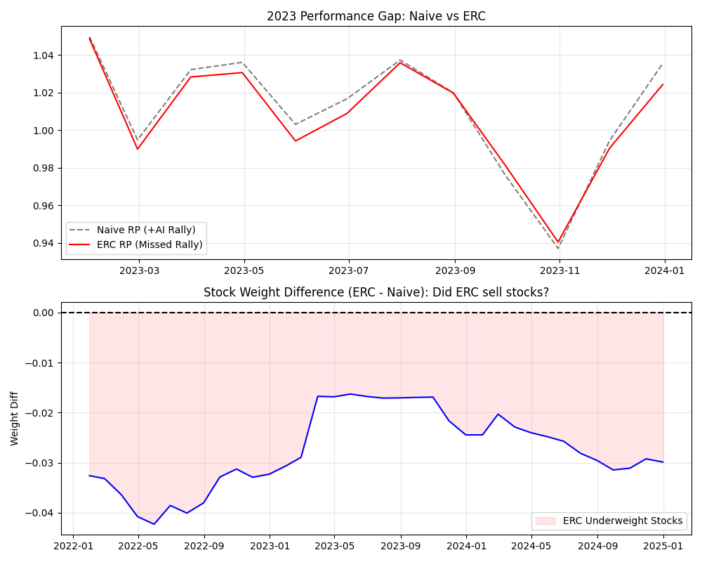
C.2 Trend Signal Mechanics: The 2022 Bond Exit
Figure C.2 provides a microscopic view of the Trend Filter in action during the critical 2022 inflation shock. The plot overlays the price of the 10-Year Treasury ETF (IEF) with the Moving Average signal. The mechanism is binary and decisive: as IEF broke the trend in early 2022, the signal switched to “Risk Off,” forcing the entire bond sleeve to cash/T-bills, thereby avoiding the subsequent 20% decline that impaired the static portfolio.
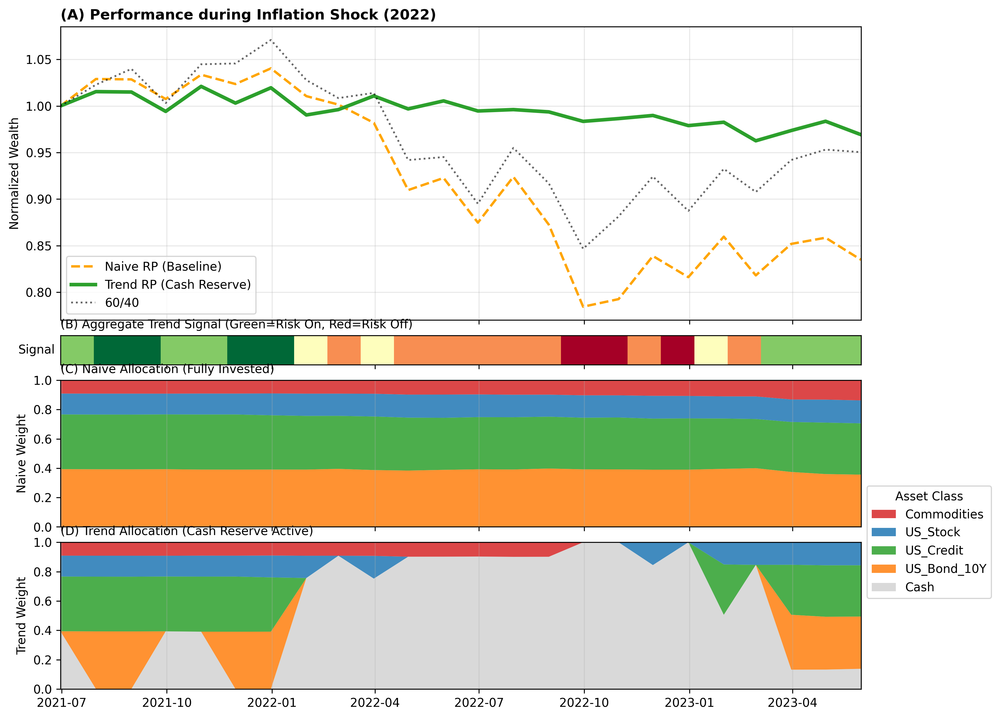
C.3 Long-Term Structural Evolution
Figure C.3 visualizes the macroscopic evolution of the Risk Parity portfolio over 35 years. It highlights the “Leverage Cycle”: leverage ratios (total height of the stack) were low during the high-volatility 1990s and 2000s but expanded significantly during the low-volatility 2010s. This leverage expansion left the strategy structurally fragile to the volatility spike of 2022.
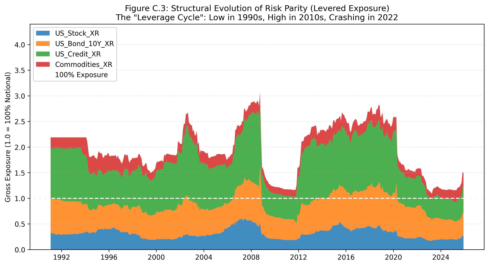
References
Asness, Clifford S., Andrea Frazzini, and Lasse H. Pedersen. 2012. “Leverage Aversion and Risk Parity.” Financial Analysts Journal 68 (1): 47–59.
Chaves, Denis B., Jason Hsu, Feifei Li, and Omid Shakernia. 2011. “Risk Parity Portfolio Vs. Other Asset Allocation Heuristic Portfolios.” The Journal of Investing 20 (1): 108–18.
Executable Books Community. 2020. “Jupyter Book.” Zenodo. https://doi.org/10.5281/zenodo.4539666.
Hurst, Brian, Yao Hua Ooi, and Lasse H. Pedersen. 2017. “A Century of Evidence on Trend-Following Investing.” Journal of Portfolio Management 44 (1): 15–29.
“Jabref.” 2021. https://www.jabref.org.
Maillard, Sébastien, Thierry Roncalli, and Jérôme Teïletche. 2010. “On the Properties of Equally-Weighted Risk Contributions Portfolios.” Journal of Portfolio Management 36 (4): 60–70.
Moskowitz, Tobias J., Yao Hua Ooi, and Lasse H. Pedersen. 2012. “Time Series Momentum.” Journal of Financial Economics 104 (2): 228–50.
Peterson, Brian G. 2016. “Research Replication.” https://www.researchgate.net/publication/319298241_Research_Replication.
———. 2017. “Developing & Backtesting Systematic Trading Strategies.” https://www.researchgate.net/publication/319298448_Developing_Backtesting_Systematic_Trading_Strategies.
Qian, Edward. 2005. “Risk Parity Portfolios: Efficient Portfolios Through True Diversification.” PanAgora Asset Management White Paper. https://www.panagora.com/assets/risk_party_portfolios.pdf.
Sullivan, Rodney N., and Matthew Wey. 2025. “Risk Parity and Its Discontents.” SSRN Working Paper No. 5165202. https://doi.org/10.2139/ssrn.5165202.
Wouts, Marc. 2022. “Jupyter Notebooks as Markdown Documents, Julia, Python or r Scripts.” https://jupytext.readthedocs.io/en/latest/.
Xie, Yihui. 2017. “R Markdown — Dynamic Documents for r.” http://rmarkdown.rstudio.com/.